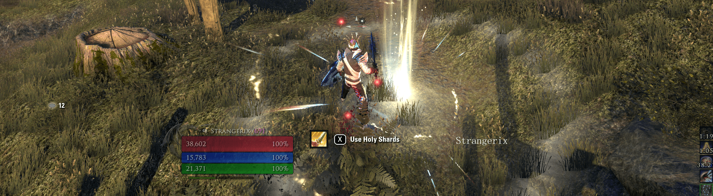
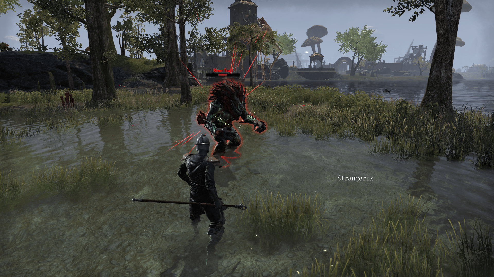
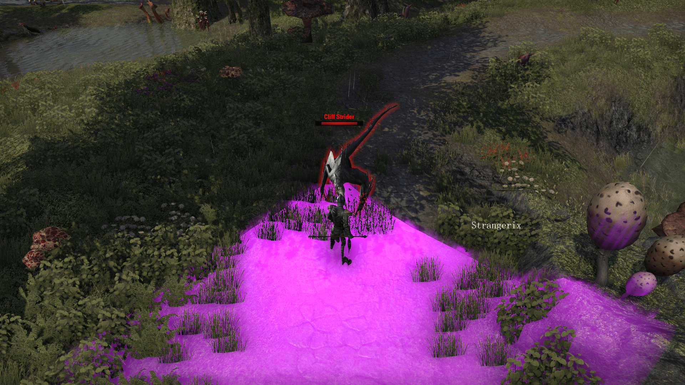

Podstawowe akcje
Na początek warto omówić to co wszyscy bardzo lubimy, czyli zadawanie obrażeń, oraz ich unikanie. Niby takie proste rzeczy a jednak jest kilka ciekawych informacji, wartych omówienia
Podstawowe akcje
Na początek warto omówić to co wszyscy bardzo lubimy, czyli zadawanie obrażeń, oraz ich unikanie. Niby takie proste rzeczy a jednak jest kilka ciekawych informacji, wartych omówienia
Attack
Niby taka naturalna rzecz a jednak tak wiele można pominąć.
Zwykłe ataki 'lewoklikacze' dzielimy na aż 3 rodzaje :
1. Light czyli zwykły lewoklik
2. Medium czyli przytrzymany atak ale nie do końca
3. Full-Heavy- w pełni naładowany atak
Nad light i medium chyba nie trzeba się wiele rozpisywać. Natomiast Heavy ma kilka fajnych rzeczy sam w
sobie.
Full-Heavy attack przywraca nam staminę lub magickę jeśli trafi w cel.
Dodatkowo jeśli trafimy takim atakiem przeciwnika ze stanem specjalnym off balance zadamy mu jeszcze
więcej obrażeń i wprowadzimy w stan hardCC. Oczywiście nie działa to na bossach.
Block
Blokowanie polega na przytrzymaniu PPM i czekaniu na otrzymanie obrażeń. Niestety tutaj również trzeba wyjaśnić kilka spraw. Pierwszą i najważniejszą jest to że block kosztuje staminę. Podczas trwania bloku stamina nie regeneruje się. Jest również współczynnik "szczelności" bloku. Nazywa się to block mitigation i oznacza on ile obrażeń dostaniem z zablokowanego ataku. Jest również specjalny rodzaj bloku za pomocą ice staff. Przy wykupieniu pasywek z drzewka destro blok za pomocą lodowej laski będzie kosztował magickę. Jest to bardzo przydatna wiedza dla tanków ;)
No i zapomniałbym o najważniejszym: Podczas bloku można używać większości umiejętności
Bash
Bashowanie polega na użyciu kombinacji PPM+LPM Czyli light attack'u w trakcie trzymania bloku. Pozwala nam to przerywać umiejętności ładowane przeciwników a przy odpowiedniej wyobraźni z doborem setów można nawet zadawać tym niemałe obrażenia
Interupt
Jest to mechanika przerywania umiejętności cast'owanych. Służą do tego Bash jak również umiejętność z drzewka destro o nazwie Crushing Shock, Venom Arrow z drzewka łuku oraz kilka klasowych: Deep Breath -DragonKnight, drzewko Draconic Power Focused charge-Templar, drzewko Aedric Spear
Roll Douge
Możliwość unikania obrażeń jest bardzo przydatna, szczególnie dla staminowych postaci. Polega ona na podwójnym kliknięciu strzałki czy czym tam się poruszacie. W trakcie trwania unikacie wszystkich obrażeń oraz dostajecie chwilowy wzrost szybkości poruszania. Z ważniejszych ciekawostek warto dodać, że każdy kolejny roll kosztuje coraz więcej staminy.
Synergia
Synergia sama w sobie jest unikatowym sposobem interakcji z umiejętnościami innych graczy. Część umiejętności posiada efekt synergii. Polega ona na odzyskaniu części resource'ów, zdobyciu dodatkowych buffów itp. Są również takie, które są związane ze specjalnymi mechanikami niektórych bossów. Przy tych często musimy ratować towarzyszy z kokonu Pajęczyc itp.
Heavy Attack

Są to mocniejsze wersje zwykłych ataków, zadające większe obrażenia i często nakładająca stany specjalne takie jak Stun'y czy odepchnięcia Charakteryzuje się żółtymi iskrami. Jest to atak, który TRZEBA zablokować lub uniknąć.
Cast Attack
Często związany z jakąś mechaniką lub specjalną umiejętnością który można przerwać za pomocą Bash'a lub specjalnych umiejętności. Ten rodzaj ataków ma czerwone iskry. Często spotykamy się z tym na trialach i dungeonach. Jednym z podstawowych zadań tanka jest właśnie przerywanie tych ataków.
AoE (Area of effect) DMG
Jak sama nazwa wskazuje jest to obszar działania. Wielu przeciwników w grze posiada umiejętności zadające obrażenia na jakimś obszarze. Często spotykamy się z magami rzucającymi runami ognia lub zombie plującymi przed siebie własnymi wnętrznościami. Jedynym ratunkiem jest jak najszybciej opuścić taki obszar.
Crowd Control effects
W skrócie CC, po polsku: efekty kontroli tłumu. Są to stany specjalne uniemożliwiające nam przemieszczanie się, akcję, lub przerywające aktualną aktywność. Można je podzielić na lowCC czyli takie, które jedynie przerywają nam akcję lub zatrzymują w miejscu i hardCC- te,które uniemożliwiają nam jakąkolwiek aktywność.
Aby uwolnić się z lowCC typu root (pułapka, uziemienie) wystarczy zrobić roll dodge. HardCC takie jak stun czy usidlenie(np. od stranglerów) wymaga od nas użycia Break Free czyli kombinacji PPM+LPM